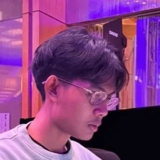

Tengku Farhan a.k.a. hanebox
Software engineer
Jakarta, Indonesia
I build for the web, and a lot of that work has been making slow things fast. Right now I'm a founding engineer at Pivy.
On the side I make open source tools under nostacks. The best known is Ekphos, a Markdown tool for the terminal.
Projects
-
Ekphos
1k+ starsA Markdown research tool for the terminal, written in Rust and inspired by Obsidian. It shows images inline in iTerm2, Kitty, and Sixel terminals, and installs from Cargo, Homebrew, or the AUR.
Work
-
Pivy · Founding Engineer
Sep 2025 – NowLeading engineering across the frontend and backend. Rewrote the entire product to a design engineering standard on rebuilt infrastructure, moved it from SPA to SSR, and achieved a 3x performance gain through off-thread processing, lazy loading, and asset compression.
-
ArctureLab · Senior Software Engineer
Mar – Sep 2025Led the engineering team. Built landing pages for clients from construction to e-commerce, and moved older apps onto lighter stacks.
-
Engowl Studio · Software Engineer
Feb 2024 – Mar 2025Built a blockchain indexer for a DeFi yield platform, wired smart contracts into client apps, and experimented with design engineering and visuals for the web.
-
Netra Music · Frontend Engineer
Feb 2023 – Jan 2024Improved rendering performance on a 3D-heavy landing page by rewriting animations that caused CPU thrashing. Optimized the dashboard for large datasets with list virtualization and image preloading, and migrated the API client from REST to GraphQL.
Stack
TypeScript, Rust, Go, SQL
React, Fastify, Axum, Fiber